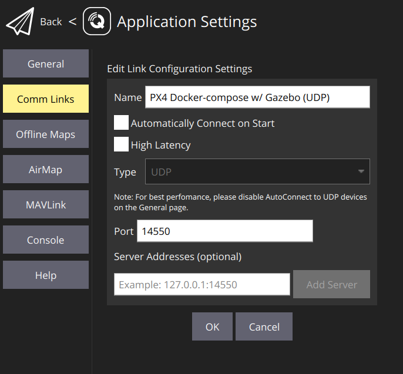

Running a simulation
This is the easiest way to get started without the need of additional hardware, apart from you laptop.
Software requirements
Operating system: Linux / MacOS(?)
(?) - Currently being tested
- Docker for simulation (Install Docker)
- Docker Compose for simulation (Install Docker Compose)
- Rust for
cargo run(Install the Rust programming language) - Git
sshkey set on your GitHub profile, see Connecting to GitHub with SSH- QGroundControl (optional)
protocfor running themav-sdkbuild script when using the examples, see Protocol Compiler Installation. Sinceprostversion0.11,protocis no longer automatically installed on the host machine.
-
git clone git@github.com:AeroRust/mav.git && cd mav1.1. Install
protoc- For Windows, Linux & mac1.2.
git submodule init && git submodule update -
Run PX4, Gazebo and MAVSDK Server with
docker compose
docker compose up --detach
Tools: PX4 (autopilot), Gazebo (a tool for simulations) and MAVSDK server are all open-source tools and later we will get to know what each tool does.
For the time being, however, all you need to know is that this is how we simulate a drone using Docker containers.
- Take it to the skies
cargo run -p mav-sdk --example takeoff
QGroundControl Docker
QGroundControl provides full flight control and mission planning for any MAVLink enabled drone. Its primary goal is ease of use for professional users and developers. All the code is open-source source, so you can contribute and evolve it as you want.
In order to connect to the PX4 running inside Docker, use this setup:

Connecting Gazebo GUI (client) to Gazebo server (in Docker)
The Gazebo simulation tool usually runs a server and a GUI on the host machine,
however, our setup is running in Docker with mode headless for Gazebo,
so we only have the server running in Docker.
IMPORTANT: You must have installed the exact same Gazebo version locally as the one found in the Docker setup, otherwise you won’t be able to connect
On Linux:
source /usr/share/gazebo-11/setup.sh && \
gzclient --verbose
/usr/share/gazebo-11/setup.sh contains a few default environment variables that you don’t need to pass, otherwise use:
GAZEBO_MASTER_URI=127.0.0.1:11345 gzclient --verbose